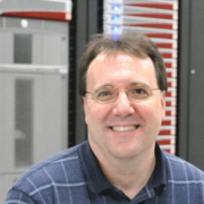

Barry Smith

https://orcid.org/0000-0001-5955-8111
Project
PETSc Library
.
Book
Domain Decomposition: Parallel Multilevel Methods for Elliptic Partial Differential Equations
,
Publications
Publications at Google Scholar
Awards and Honors
Our paper, Efficient management of parallelism in object-oriented numerical software libraries. Chapter 10 in E. Arge, A.M. Bruaset and H.P. Langtangen (Eds), Modern Software Tools in Scientific Computing, pp. 163-202, 1997 was selected by the DOE Office of Science for the DOE 40th anniversary collection of 40 major papers that have changed the face of science, with Satish Balay, Bill Gropp, and Lois Curfman McInnes.
SIAM/ACM Computational Science and Engineering Award
, 2015 with Satish Balay, Jed Brown, William Gropp, Matthew Knepley, Lois Curfman McInnes, and Hong Zhang.
Fellow of the Society of Industrial and Applied Mathmematicians (SIAM Fellow)
, 2012.
2012 Argonne National Laboratory Distinguished Performance Award.
Winner of a 2011
Ernest Orlando Lawrence Award
for outstanding contributions in research and development supporting the Department of Energy and its missions with Lois Curfman McInnes.
Recipient of a 2009 R and D 100 award for the PETSc software package with Satish Balay, Bill Gropp, and Lois Curfman McInnes.
Several winners and finalists of the Gordon Bell prize in the past twenty years have utilized PETSc.
Finalist for the 2009 Gordon Bell prize in the special category with Dinesh Kaushik and Mike Smith.
1999 Gordon Bell prize in the special category with Dinesh Kaushik, David Keyes, and Bill Gropp.
Co-winner, Householder Prize: International prize for the best dissertation in numerical linear algebra during the previous three years, 1993.
Second Prize, Fifth Leslie Fox Prize Meeting: International prize in numerical analysis offered every two years, 1991.
First Prize, Student Paper Competition, Copper Mountain Conference on Iterative Methods, 1990.
Address
bsmith@petsc.dev


 https://orcid.org/0000-0001-5955-8111
https://orcid.org/0000-0001-5955-8111